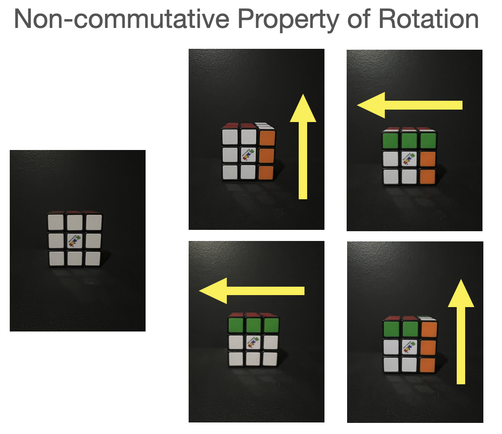
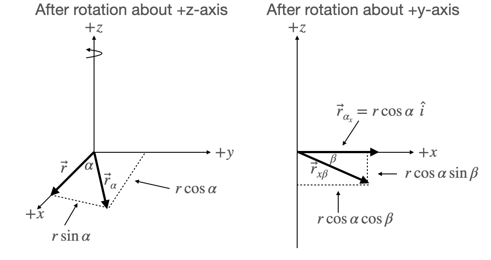

C3.1 Angular Velocity#
C3.1.1 Motivation: From Fixed Axis to General Rotation#
Up to now, we’ve described rotation around a fixed axis, usually using a scalar angular velocity component (or speed) \( \omega \) and associating it with a unit vector along the axis (like \( \hat{z} \)) to label it as the angular velocoty. For example, a wheel spinning around the \( z \)-axis can be described by:
But what happens if the object doesn’t spin around a fixed axis? Imagine a spinning book or a tumbling football. The rotation axis can shift from moment to moment, and might not align with a principal coordinate axis at all. In such cases, we need a full vector to describe the angular velocity—one that tells us how fast and about which axis the object is rotating at any instant.
C3.1.2 A Problem with Finite Rotations#
Before we define angular velocity as a vector, we hit a conceptual snag: finite rotations do not commute.
Rotating an object 90° about the \(x\)-axis and then 90° about the \(y\)-axis gives a different result than doing it in the reverse order.
This means finite rotations can’t be added like vectors. So, a “rotation vector” that describes the total rotation of an object is not well-defined in the usual vector sense.
This complicates our idea of “angular velocity” being a vector… unless we think smaller.

For those of you interested in Rubik’s Cube and permutations: Rukib’s Cube Group
C3.1.3 Infinitesimal Rotations: The Key Insight#
While finite rotations don’t behave like vectors, infinitesimal rotations do.
For very small time intervals \( \Delta t \), the rotation is so slight that the non-commutativity becomes negligible.
In this limit, we can define a vector that represents the instantaneous axis and rate of rotation.
This leads us to define the angular velocity vector \( \vec{\omega} \) as the limit of rotation over time as the interval goes to zero.
C3.1.4 Deriving the Angular Velocity Vector#
Intuitive Approach#
In this approach, we’ll pretend (just a little) without justifications that we can treat angular displacement like a vector:
Here, \( \Delta\theta \) is how much we rotate, and \( \hat{n} \) is the direction we’re rotating around. This idea feels pretty natural—and while it’s not technically true for big rotations (since rotations don’t always play nicely like vectors do), we’re going to hang out in Happy Math Valley for now, where everything is smooth, tiny, and well-behaved. We’ll tighten things up later, but for now, intuition rules!
Let’s consider a rigid body and pick a point on it with position vector \( \vec{r}(t) \) relative to the center of mass.
Because the body is rotating, this point traces out a circular arc in space. The velocity of this point is always perpendicular to the vector from the center and lies in the plane of rotation.
Let’s make this formal:
We claim this velocity is given by:
This tells us that the instantaneous velocity is perpendicular to both the angular velocity vector \(\vec{\omega} \) and the position vector \(\vec{r} \), which matches physical intuition.
To justify this, imagine that during a small time \( \Delta t \), the object rotates by a small angle \( \Delta \theta \) about an axis \( \hat{n} \). Then every point moves approximately perpendicular to the axis, and the displacement is:
Divide both sides by \( \Delta t \), and take the limit:
Here, \( \vec{\omega} = \frac{d\theta}{dt} \hat{n} \) is the angular velocity vector, with magnitude equal to the angular speed and direction along the axis of instantaneous rotation (right-hand rule).
More Rigorous Approach#
This follows the derivation in Kleppner and Kolenkow (Chapter 7, Note 7.1).
Consider a vector \(\vec{r} = r\hat{i}\) and rotate it an angle \(\alpha\) about the \(z\)-axis followed by a rotation about the \(y\)-axis by an amount \(\beta\). Then repeat but in opposite order.
Rotation about \(z\) followed by \(y\)#
The first rotation leads to a new vector (see Figure below)
The second rotation about the \(y\)-axis will leave the \(y\)-component invariant and rotate the \(x\)-component into the 4th quadrant of the \(xz\)-plane (see Figure below):
or

Adding the invariant component of \(\vec{r}\), we have
Box Activity 1 — Order of Rotations Matters
Above, we first rotated the position vector about the \(z\)-axis by an angle \(\alpha\) and then about the \(y\)-axis by an angle \(\beta\).
Now repeat the process in the reverse order.
Start with the vector
and perform the following sequence:
Rotate first about the \(y\)-axis by angle \(\beta\)
Then rotate about the \(z\)-axis by angle \(\alpha\)
Show that the final vector becomes
Compare this result to Equation (1) from the previous derivation.
What differences do you observe?
What does this suggest about the order of rotations in three-dimensional space?
Activity solution
We begin with the vector
Step 1 — Rotate About the \(y\)-Axis
A rotation about the \(y\)-axis changes the \(x\)- and \(z\)-components while leaving the \(y\)-component unchanged.
After rotating by angle \(\beta\):
Step 2 — Rotate About the \(z\)-Axis
A rotation about the \(z\)-axis mixes the \(x\)- and \(y\)-components:
Since
we obtain
and
The \(z\)-component remains unchanged:
Therefore,
which matches Equation (2).
Physical Interpretation
Comparing this result to Equation (1), we see that the final vector is generally different.
This demonstrates an extremely important property of three-dimensional rotations:
Key Idea:
Rotations in three dimensions generally do not commute.
That is,
The final orientation depends on the order in which the rotations are applied.
Box Activity 2 — Infinitesimal Rotations
In principle, we are rotating the vector across the intervals
Investigate what happens when these rotations become very small.
Replace the angles in Equations (1) and (2) with \(\Delta\alpha\) and \(\Delta\beta\).
Apply the small-angle approximations
for sufficiently small \(\theta\).
Compare the resulting expressions for
Is rotation commutative for infinitesimal rotations?
Activity solution
Equation (1) is
Replacing \(\alpha\) and \(\beta\) with \(\Delta\alpha\) and \(\Delta\beta\) gives
Using
we obtain, to first order,
Equation (2) is
Replacing \(\alpha\) and \(\beta\) with \(\Delta\alpha\) and \(\Delta\beta\) gives
Using the same small-angle approximations gives, to first order,
Therefore,
to first order in the small angles.
This means that infinitesimal rotations are effectively commutative.
Important Result:
Although finite rotations in three dimensions generally do not commute, infinitesimal rotations commute to first order.
This allows us to define an infinitesimal angular displacement vector:
representing rotations about the \(y\)- and \(z\)-axes, respectively.
This is only true when the angles of rotation are small.
Hopefully, you concluded that infinitesimal rotations are indeed commutative and we can therefore define an infinitesimal angular displacement vector for our case as
representing rotation about the \(y\) and \(z\) axes, respectively. Note: this is only true of the angles of rotation are small.
Box Activity 3 — Displacement from Two Infinitesimal Rotations
For our case of two infinitesimal rotations, the rotated vector is approximately
The original vector is
Show that the displacement vector is
Activity solution
The infinitesimal displacement vector is the change in the position vector:
Substitute the approximate rotated vector and the original vector:
The \(r\hat{i}\) terms cancel:
Therefore,
This shows that, to first order, the infinitesimal displacement is perpendicular to the original vector \(r\hat{i}\).
Box Activity 4 — Infinitesimal Rotation as a Cross Product
For our case, the infinitesimal angular displacement vector is
and the original position vector is
Verify that Equation (3),
is the same as
Activity solution
Start with
and
Then
Distribute the cross product:
Using
and
we get
Therefore,
Thus,
Box Activity 5 — Deriving the Velocity of a Rotating Body
Using the previous results, prove that the velocity of a point on a rotating rigid body is
Recall that we showed
Activity solution
We begin with the infinitesimal displacement relation:
Divide both sides by the infinitesimal time interval \(dt\):
The left-hand side is the velocity:
The angular velocity vector is defined as
Substituting gives
Therefore, the velocity of a point on a rotating rigid body is perpendicular to both the angular velocity vector and the position vector.
C3.1.5 — Velocity and Angular Velocity#
From our analysis of infinitesimal rotations, we found that the infinitesimal displacement of a point on a rotating rigid body can be written as
Dividing by \(dt\) and defining the angular velocity vector as
we obtain one of the fundamental equations of rotational kinematics.
Velocity of a Point on a Rotating Rigid Body
The linear velocity of a point located at position \(\vec{r}\) on a rotating rigid body is
In index notation, this becomes
This relation shows that the velocity is perpendicular to both the angular velocity vector and the position vector.
C3.1.6 Key Takeaways#
Finite rotations are not vectors, but infinitesimal rotations are.
This allows us to define the angular velocity vector \( \vec{\omega} \).
For any point on a rigid body, its velocity relative to the center of mass is:
\[ \vec{v} = \vec{\omega} \times \vec{r} \]The direction of \( \vec{\omega} \) gives the instantaneous axis of rotation, and its magnitude is the angular speed.